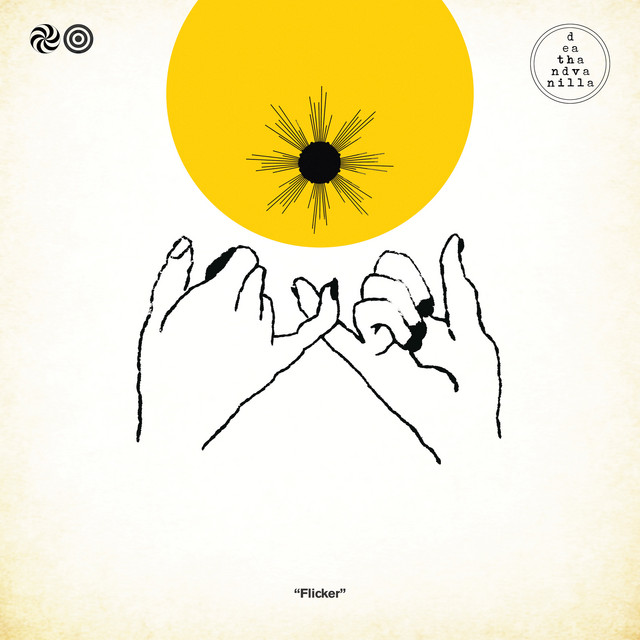

Death and Vanilla - Flicker



Información del álbum facilitada por discogs.com:
Fecha de lanzamiento: 2023
Géneros: Electronic, Rock
Estilos: Synth-pop, Darkwave, Experimental
Pais: US
Sello: Radex Recording Studios
Recorded At: Radex Recording Studios
Accordion, Tenor Saxophone - Greg Anderson (11)
Drums - Tom Metz
Engineer - Dexter Witt
Horn [Bass Horn] - Gary Pulver
Trumpet - Kevin Finkenbinder
Trumpet, Organ - Pam Anderson (2)
Vocals, Guitar, Banjo - Craig Brown (5)
Tracklist:
A1. Out For Magic
A2. Baby Snakes
A3. Find Another Illusion
A4. Perpetuum Mobile
B1. Looking Glass
B2. Mercury’s Rising
B3. Fearless
B4. Transparent Things
B5. Perpetuum Reprise